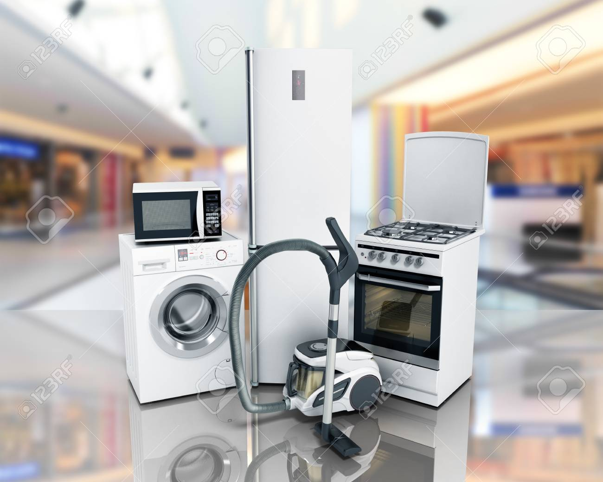

Electrodomesticas de limpieza
Los electrodomésticos de limpieza son herramientas clave para mantener un hogar limpio y ordenado de manera eficiente.
Los electrodomésticos de limpieza están diseñados para facilitar las tareas domésticas relacionadas con la limpieza, eliminación de suciedad, polvo y desechos, y mantenimiento de un entorno saludable en el hogar.
Estos electrodomésticos pueden ser utilizados para una variedad de tareas de limpieza en diferentes áreas del hogar, incluyendo la limpieza de pisos, alfombras, tapicería, ropa, vajilla, y más.
Los electrodomésticos de limpieza están diseñados para ser eficientes y convenientes, reduciendo el tiempo y esfuerzo requeridos para realizar tareas de limpieza manualmente.
